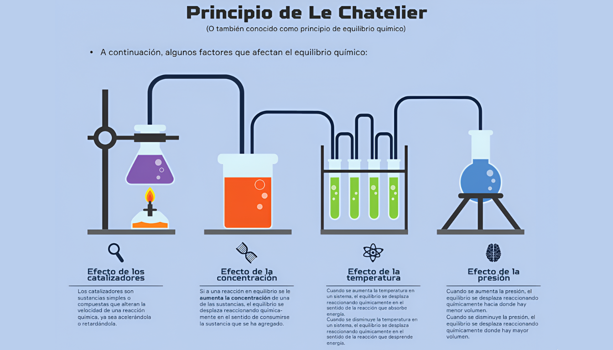
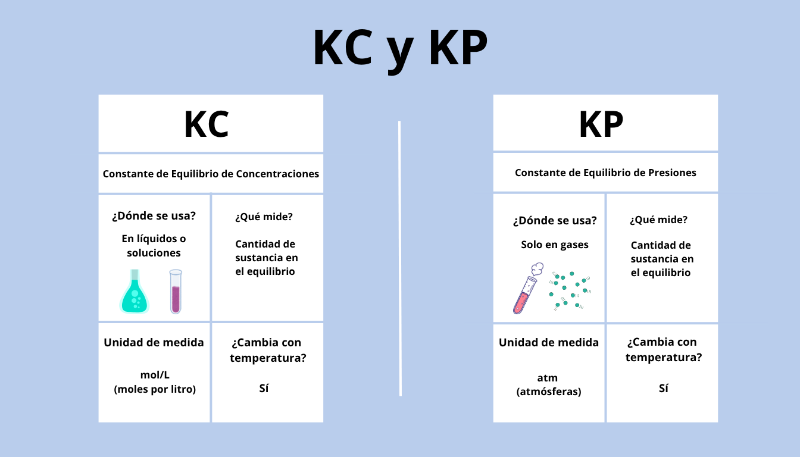

Tu asistente para el Equilibrio Químico
Domina el principio de Le Chatelier y resuelve ejercicios de equilibrio de forma fácil y rápida. ¡Empecemos!
Ir a la Calculadora🧮 Calculadora de Equilibrio Químico
Resultados
🧪 Entendiendo la Teoría
Equilibrio Químico
Una reacción reversible alcanza el equilibrio químico cuando la velocidad de la reacción hacia adelante es igual a la velocidad de la reacción inversa. En este punto, las concentraciones de reactivos y productos permanecen constantes.
Principio de Le Chatelier
Si un sistema en equilibrio es perturbado por un cambio (en concentración, presión o temperatura), el sistema se ajustará para contrarrestar ese cambio y restablecer un nuevo equilibrio.
Constantes Kc y Kp
La constante de equilibrio (K) indica la relación entre productos y reactivos en el equilibrio. Kc se usa para concentraciones (mol/L) y Kp para presiones parciales (atm).
💡 Ejemplo Resuelto
Veamos un caso práctico. Para la reacción 2 SO₂(g) + O₂(g) <=> 2 SO₃(g) en un recipiente de 10 L, se inicia con 0.5 mol de SO₂ y 0.2 mol de O₂. En el equilibrio, se encuentran 0.15 mol de O₂.
Paso 1: Tabla ICE
Construimos la tabla ICE (Inicial, Cambio, Equilibrio) en moles.
| Especie | Inicial (mol) | Cambio (mol) | Equilibrio (mol) |
|---|---|---|---|
| SO₂ | 0.5 | -2x | 0.5 - 2x |
| O₂ | 0.2 | -x | 0.2 - x |
| SO₃ | 0 | +2x | 2x |
Paso 2: Encontrar 'x'
Sabemos que en el equilibrio hay 0.15 mol de O₂. Entonces: 0.2 - x = 0.15
Resolviendo, encontramos que x = 0.05 mol.
Paso 3: Calcular Concentraciones en Equilibrio
Usamos x=0.05 y el volumen de 10L:
- [SO₂] = (0.5 - 2*0.05) / 10 L = 0.4 / 10 = 0.04 M
- [O₂] = (0.2 - 0.05) / 10 L = 0.15 / 10 = 0.015 M
- [SO₃] = (2 * 0.05) / 10 L = 0.1 / 10 = 0.01 M
Paso 4: Calcular Kc
Ahora usamos la fórmula de la constante de equilibrio:
Kc = [SO₃]² / ([SO₂]² * [O₂])
Kc = (0.01)² / ((0.04)² * 0.015)
Kc = 0.0001 / (0.0016 * 0.015) = 0.0001 / 0.000024
Kc ≈ 4.17
✉️ Contacto
¿Tienes preguntas o sugerencias? ¡Nos encantaría escucharte!
Somos un grupo de estudiantes apasionados por hacer la química más accesible. Puedes encontrarnos en el campus o enviarnos un correo a hola@equilipro.edu.